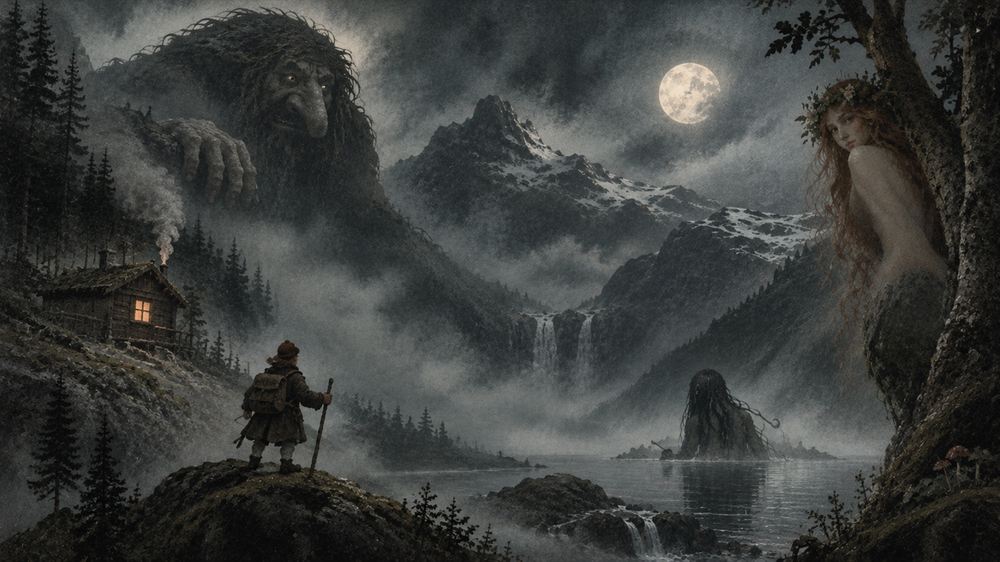
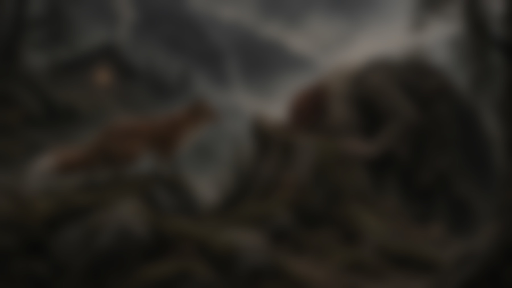
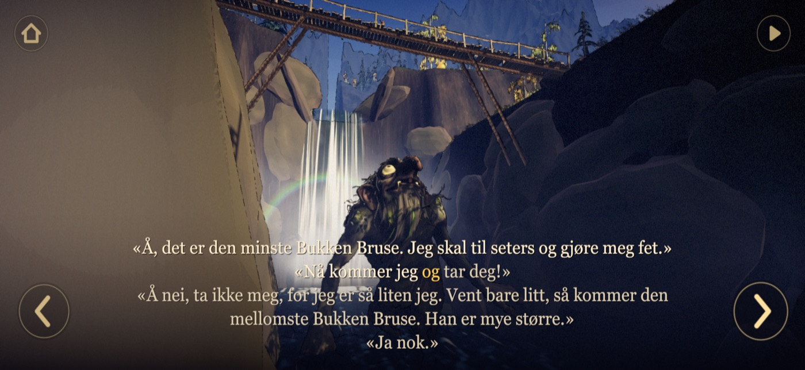
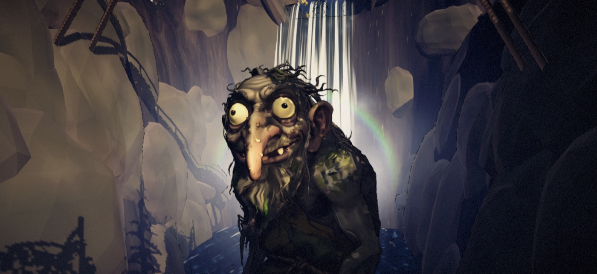
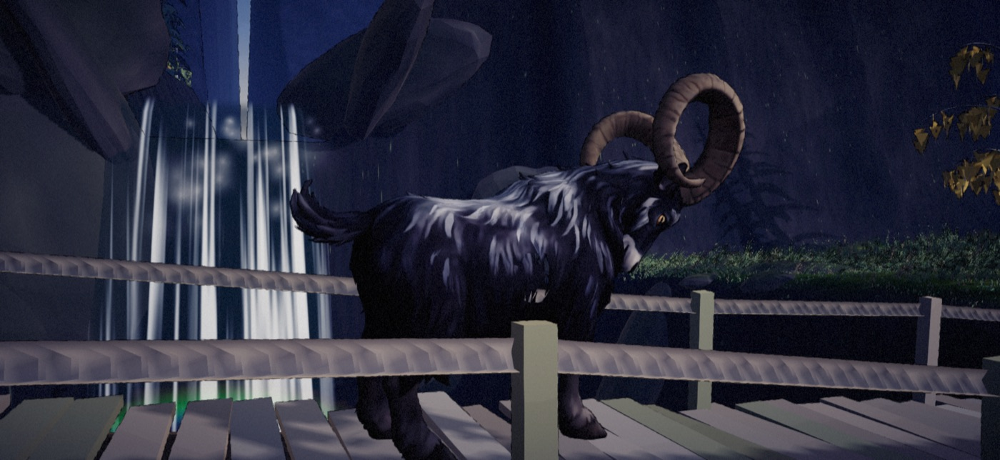
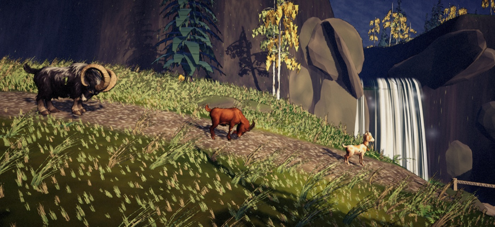
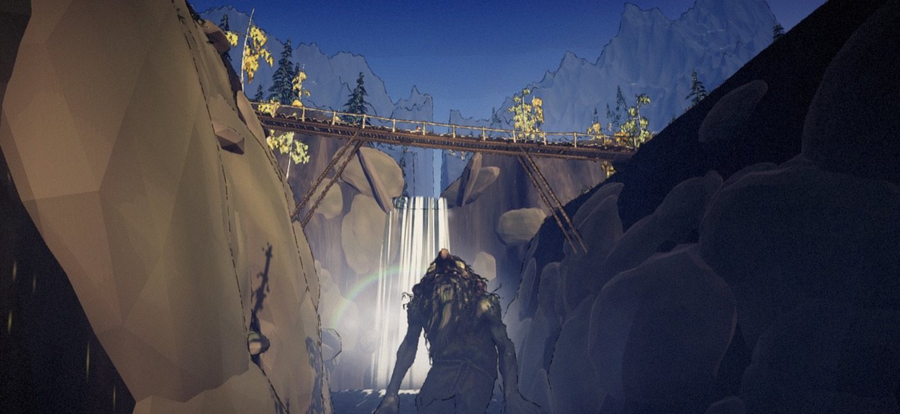
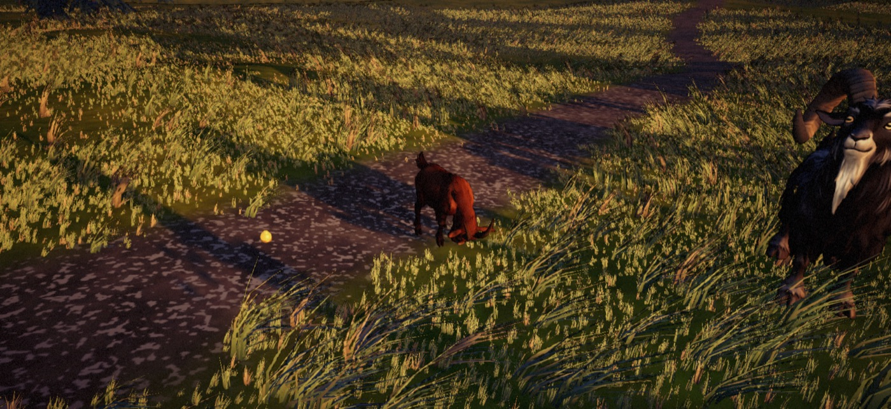

Asbjørnsen og Moe · iPad og iPhone · 3–8 år
Fortelleren leser høyt, ordene lyser i takt med stemmen, og hver side er en verden barna kan trykke, utforske og le av. De norske folkeeventyrene, levende som aldri før.
Tripp trapp, tripp trapp…
Rull nedover og se bukkene gå over brua.
Leselyst
Barn lærer å lese når lyden og bokstavene møtes. I Soria Moria skjer det av seg selv: hvert ord lyser idet fortelleren sier det, og barna følger med, side for side, eventyr for eventyr.
«Hvem er det som tripper på brua mi?» skrek trollet. «Å, det er den minste bukken Bruse, og jeg skal til seters og gjøre meg fet.»
Høytlesing gir større ordforråd, bedre språkforståelse og lyst til å lese selv. Soria Moria gjør høytlesingen til en lek, også de kveldene du er for trett til å lese.
Kulturarv
For snart 200 år siden reiste Peter Christen Asbjørnsen og Jørgen Moe rundt i Norge og skrev ned eventyrene folk fortalte hverandre ved peisen. Trollene, nøkken og Askeladden ble en del av hvem vi er.
Soria Moria tar vare på originalteksten, med sin rytme og sine gamle ord, og gir den nytt liv for en generasjon som vokser opp med skjerm. Slik blir skjermtiden kulturarv.

Eventyrene
Trykk på et kort for å snu det.

Inne i boka
Trykk på trollet, se fisken hoppe, stang trollet utfor fossen. Barna oppdager noe nytt hver gang de leser.






For foreldre
Gratis
Ett engangskjøp
Appen er laget for barn fra ca. 3 til 8 år. De minste lytter og leker, de eldste leser med og etter hvert selv. Eventyrene følger originalteksten til Asbjørnsen og Moe, og trollene får det de fortjener, så les gjerne sammen første gang.
Soria Moria erstatter ikke deg, men den gir barna mange flere møter med skrevne ord. Når ordet lyser idet det blir sagt, kobler barna lyd og bokstav. Gjentakelsene i eventyrene gjør at de snart leser med selv.
«De tre bukkene Bruse» er gratis. «Alle eventyr» er et engangskjøp som åpner Nøkken, Askeladden og alle nye eventyr som kommer. Prisen ser du i App Store.
Nei. Appen har ingen analyse, ingen reklame og ingen tredjepartstjenester. Les personvernerklæringen.
Åpne innstillingene via voksenporten og trykk «Gjenopprett kjøp». Bruk samme Apple-konto som ved kjøpet.
Prøv selv
Trykk på den store bukken tre ganger.
Last ned Soria Moria og les «De tre bukkene Bruse» gratis i kveld.
Last ned gratisiPad og iPhoneKommer snart til App Store.